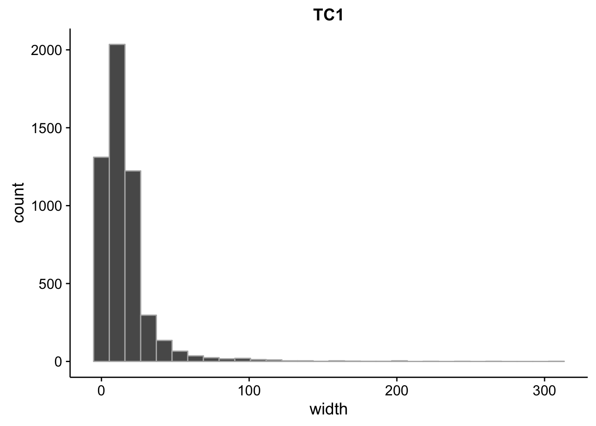
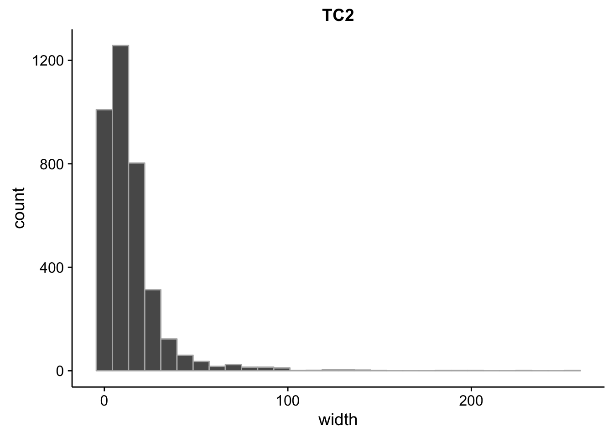
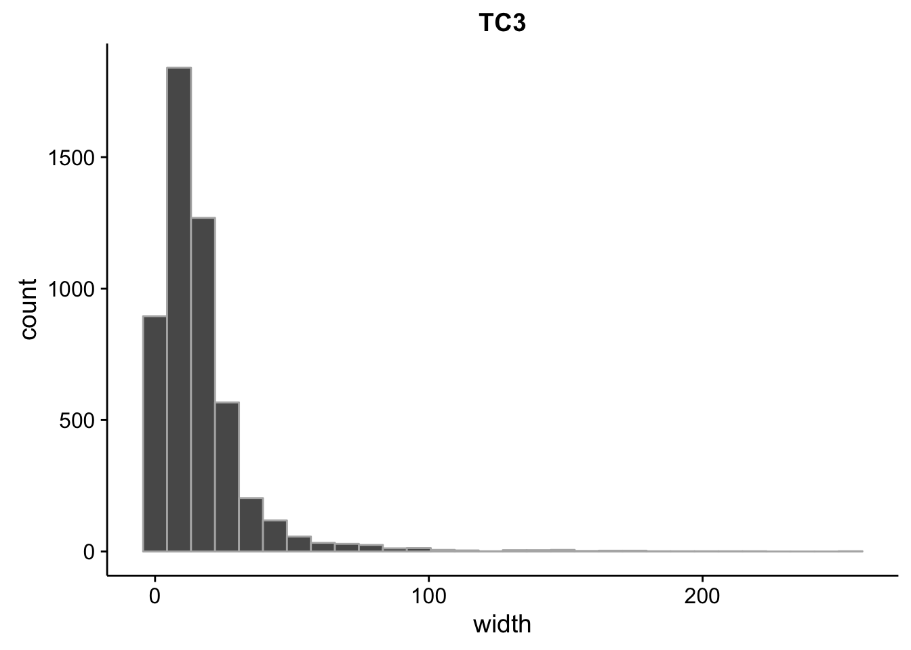
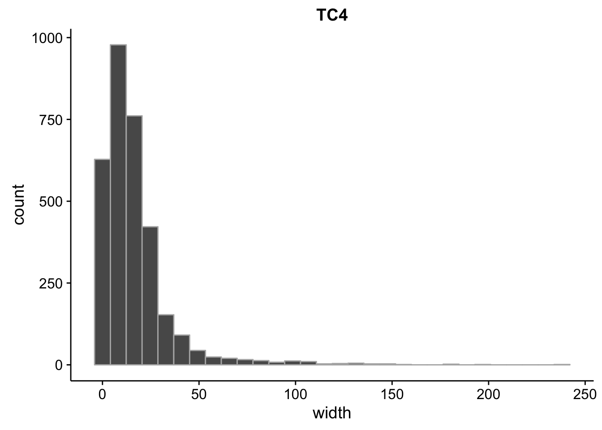
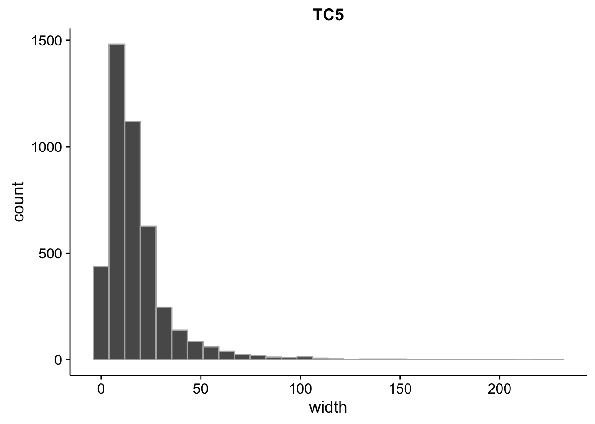
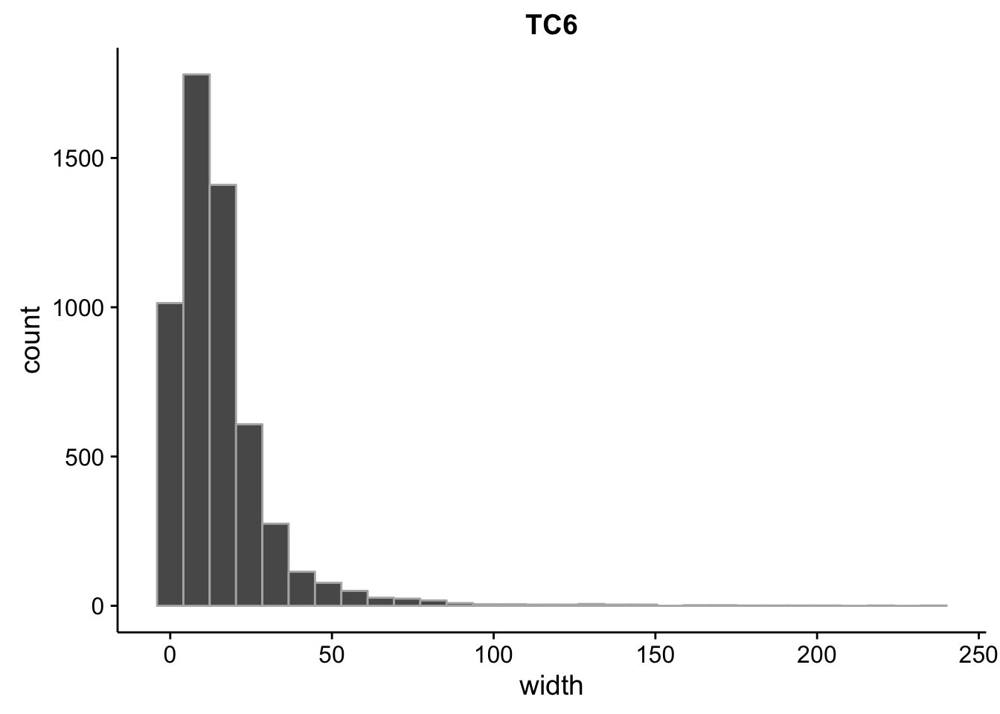
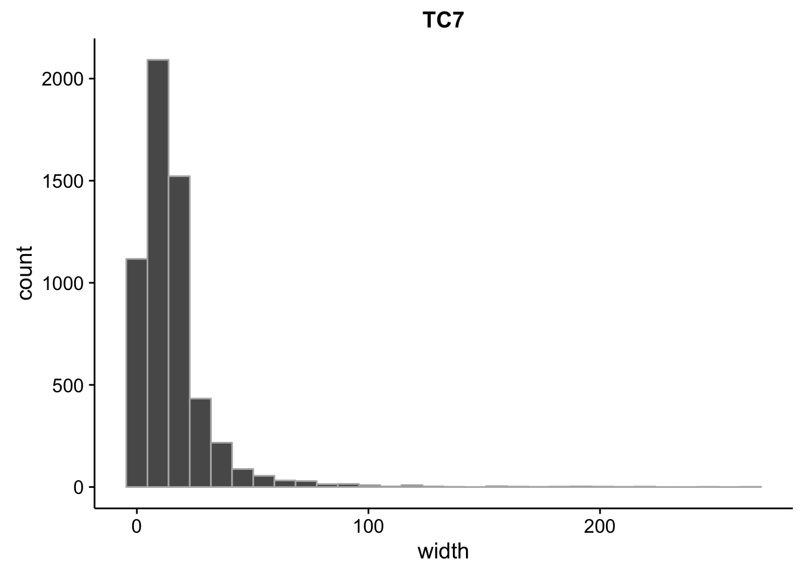

Last updated: 2017-04-10
Code version: 0e2e80a
First thing we need to do is convert the BAM files to CTSS files for CAGEr. Running the following command on each BAM files and combining the stranded files into one individual file will get you the CTSS files:
bedtools genomecov -dz -strand "+" \
-ibam data/bam/modified_tso/sorted.modified_1nt.sorted.modified.fateseq_3d7_tp1.both.mod.all.out.bam | \
awk '{print $1,$2,"+",$3}' > out_plus.ctss
bedtools genomecov -dz -strand "-" \
-ibam data/bam/modified_tso/sorted.modified_1nt.sorted.modified.fateseq_3d7_tp1.both.mod.all.out.bam | \
awk '{print $1,$2,"-",$3}' > out_minus.ctss
cat out_plus.ctss out_minus.ctss | sort -k1,1 -2,2n > out.ctssNow we can run CAGEr on the CTSS files to cluster the tag counts into tag clusters (TCs) and promoter clusters (PCs). The TCs can be thought of as TSSs while the PCs can be thought of as promoter regions with varying architectures.
Rscript code/ctss_clustering run_cager.R data/bam/modified_tso output/ctss_clustering/modifiedFirst we’ll import the tag clusters:
for (tp in seq(1,7)) {
# generate the file name
f <- paste0("../output/ctss_clustering/modified/tc",tp,".gff")
# assign the in read file to a variable
assign(x = paste0("tc",tp),
value = rtracklayer::import.gff(f)
)
# group by chromosome and count the number of TCs
dplyr::group_by(tibble::as_tibble(eval(parse(text=paste0("tc",tp)))),seqnames) %>%
summarise(n=n())
}
rm(f)Next we’ll import data on exons, introns, and genes and calculate the proportion of TCs that overlap:
exons.bed <- rtracklayer::import.bed("../data/annotations/exons_nuclear_3D7_v24.bed") %>%
tibble::as_tibble() %>%
dplyr::mutate(anno_name=name,anno_start=start,anno_end=end) %>%
GenomicRanges::GRanges()
genes.bed <- rtracklayer::import.bed("../data/annotations/genes_nuclear_3D7_v24.bed")%>%
tibble::as_tibble() %>%
dplyr::mutate(anno_name=name,anno_start=start,anno_end=end) %>%
GenomicRanges::GRanges()
introns.bed <- rtracklayer::import.bed("../data/annotations/introns_nuclear_3D7_v24.bed")%>%
tibble::as_tibble() %>%
dplyr::mutate(anno_name=name,anno_start=start,anno_end=end) %>%
GenomicRanges::GRanges()
for (tp in seq(1,7)) {
sum(GenomicRanges::countOverlaps(
eval(parse(text=paste0("tc",tp))), genes.bed) > 0) / length(eval(parse(text=paste0("tc",tp))))
sum(GenomicRanges::countOverlaps(
eval(parse(text=paste0("tc",tp))), exons.bed) > 0) / length(eval(parse(text=paste0("tc",tp))))
sum(GenomicRanges::countOverlaps(
eval(parse(text=paste0("tc",tp))), introns.bed) > 0) / length(eval(parse(text=paste0("tc",tp))))
}CAGEr creates it’s own plots for this, but we can plot them here as well and do a little more analysis. Let’s import the interquartile widths:
for (tp in seq(1,7)) {
s <- as_tibble(eval(parse(text=paste0("tc",tp)))) %>%
filter(tpm>=2) %$%
summary(width)
print(s)
g <- as_tibble(eval(parse(text=paste0("tc",tp)))) %>%
filter(tpm>=2) %>%
ggplot(aes(x=width)) +
geom_histogram(color="grey70") +
ggtitle(paste0("TC",tp))
print(g)
} Min. 1st Qu. Median Mean 3rd Qu. Max.
2.00 5.00 12.00 15.87 19.00 310.00 
Min. 1st Qu. Median Mean 3rd Qu. Max.
2.00 4.00 10.00 14.33 18.00 257.00 
Min. 1st Qu. Median Mean 3rd Qu. Max.
2.00 6.00 13.00 16.55 20.00 256.00 
Min. 1st Qu. Median Mean 3rd Qu. Max.
2.00 5.00 12.00 16.85 21.00 240.00 
Min. 1st Qu. Median Mean 3rd Qu. Max.
2.00 6.00 13.00 17.85 22.00 230.00 
Min. 1st Qu. Median Mean 3rd Qu. Max.
2.00 6.00 12.00 15.84 20.00 238.00 
Min. 1st Qu. Median Mean 3rd Qu. Max.
2.00 5.00 12.00 15.51 19.00 267.00 
rm(g,s)We can overlap promoter clusters with tag clusters to calculate the TPM of each and identify the dominant TPM found in each. We can also identify whether there are multiple possible TSSs in each based on how far apart dominant CTSS sites are.
for i in 1 2 3 4 5 6 7; do
bedtools intersect -s -wo \
-a output/ctss_clustering/modified/promoter_clusters.gff \
-b output/ctss_clustering/modified/tc${i}.gff | \
awk '{print $1,$2,$3,$4,$5,$6,$7,$8,$18}' > \
output/ctss_clustering/modified/tc${i}_inter_promoter_clusters.gff
doneNow let’s import those and calculate the total TPM for each:
for (tp in seq(1,7)) {
f <- paste0("../output/ctss_clustering/modified/tc",tp,"_inter_promoter_clusters.gff")
assign(x=paste0("pc",tp),value=tibble::as_tibble(rtracklayer::import.gff(f))%>%mutate(tp=tp))
}Lastly we want to create a set of ranges that identify “orphan” TSSs. If a TSS falls between two converging genes, then don’t annotate it by skipping genes.
# create intergenic regions that appear between convergent genes
genes <- tibble::as_tibble(rtracklayer::import.gff3("../data/annotations/genes_nuclear_3D7_v24.gff"))
convergent <- readr::read_tsv("../output/neighboring_genes/3d7_convergent.tsv")
convergent_ranges <- tibble::tibble(seqnames=character(),start=integer(),end=integer(),strand=character(),left_id=character(),right_id=character())
for (i in 1:nrow(convergent)) {
left <- genes %>% dplyr::filter(ID %in% convergent$left_gene[i])
right <- genes %>% dplyr::filter(ID %in% convergent$right_gene[i])
convergent_ranges <- dplyr::bind_rows(convergent_ranges,
tibble::tibble(seqnames=left$seqnames,
start=left$end,
end=right$start,
strand="*",
left_id=left$ID,
right_id=right$ID))
}
convergent_ranges <- convergent_ranges %>%
dplyr::filter(end-start>=0) %>%
GenomicRanges::GRanges()CAGEr can also detect ‘shifting promoters’. These are promoters where we see significant changes in the dominant CTSS within a single promoter.
files <- list.files(path="../output/ctss_clustering/modified",pattern="shifting_promoters",full.names=TRUE)
shifting <- tibble::tibble(
consensus.cluster=integer(),
chr=character(),
start=integer(),
end=integer(),
strand=character(),
shifting.score=double(),
groupX.pos=integer(),
groupY.pos=integer(),
groupX.tpm=double(),
groupY.tpm=double(),
pvalue.KS=double(),
fdr.KS=double())
for (file in files) {
shifting <- dplyr::bind_rows(shifting,read_tsv(file,col_names=TRUE))
}Not every detected shift is spatial so we can calculate the degree of spatial shifting and filter only those that shift significantly:
annotated_shifting <- shifting %>%
dplyr::mutate(shift=abs(groupX.pos-groupY.pos)) %>%
dplyr::filter(shift>=100) %>%
dplyr::distinct(chr,start,end,strand,groupX.pos,groupY.pos) %>%
dplyr::arrange(chr,start) %>%
dplyr::inner_join(pc_intergenic, by = c("chr"="seqnames","start","strand")) %>%
dplyr::distinct(chr,start,end.x,name,groupX.pos,groupY.pos) %>%
dplyr::rename(end=end.x)Now we can write that to output:
write_tsv(x=annotated_shifting,path="../output/ctss_clustering/modified/annotated_shifting.tsv")sessionInfo()R version 3.3.2 (2016-10-31)
Platform: x86_64-apple-darwin15.6.0 (64-bit)
Running under: OS X El Capitan 10.11.6
locale:
[1] en_US.UTF-8/en_US.UTF-8/en_US.UTF-8/C/en_US.UTF-8/en_US.UTF-8
attached base packages:
[1] stats graphics grDevices utils datasets methods base
other attached packages:
[1] scales_0.4.1 cowplot_0.7.0 magrittr_1.5 stringr_1.2.0
[5] dplyr_0.5.0 purrr_0.2.2 readr_1.0.0 tidyr_0.6.1
[9] tibble_1.2 ggplot2_2.2.1 tidyverse_1.1.1
loaded via a namespace (and not attached):
[1] SummarizedExperiment_1.4.0 reshape2_1.4.2
[3] haven_1.0.0 lattice_0.20-34
[5] colorspace_1.3-2 htmltools_0.3.5
[7] stats4_3.3.2 rtracklayer_1.34.2
[9] yaml_2.1.14 XML_3.98-1.5
[11] foreign_0.8-67 DBI_0.5-1
[13] BiocParallel_1.8.1 BiocGenerics_0.20.0
[15] modelr_0.1.0 readxl_0.1.1
[17] plyr_1.8.4 zlibbioc_1.20.0
[19] Biostrings_2.42.1 munsell_0.4.3
[21] gtable_0.2.0 workflowr_0.3.0
[23] rvest_0.3.2 psych_1.6.12
[25] evaluate_0.10 labeling_0.3
[27] Biobase_2.34.0 knitr_1.15.1
[29] forcats_0.2.0 IRanges_2.8.1
[31] GenomeInfoDb_1.10.3 parallel_3.3.2
[33] broom_0.4.2 Rcpp_0.12.9
[35] backports_1.0.5 S4Vectors_0.12.1
[37] jsonlite_1.3 XVector_0.14.0
[39] Rsamtools_1.26.1 mnormt_1.5-5
[41] hms_0.3 digest_0.6.12
[43] stringi_1.1.2 GenomicRanges_1.26.3
[45] grid_3.3.2 rprojroot_1.2
[47] tools_3.3.2 bitops_1.0-6
[49] lazyeval_0.2.0 RCurl_1.95-4.8
[51] Matrix_1.2-8 xml2_1.1.1
[53] lubridate_1.6.0 assertthat_0.1
[55] rmarkdown_1.3 httr_1.2.1
[57] R6_2.2.0 GenomicAlignments_1.10.0
[59] nlme_3.1-131 git2r_0.18.0 This R Markdown site was created with workflowr